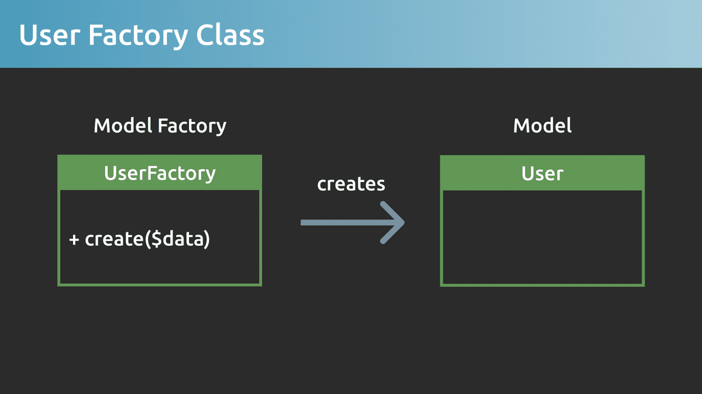
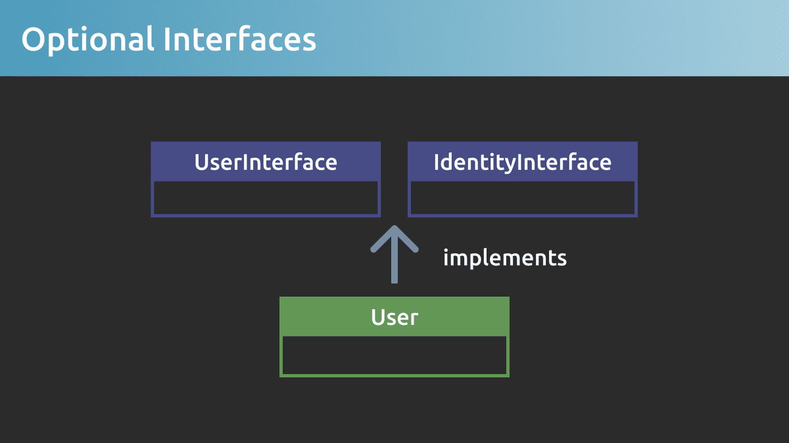
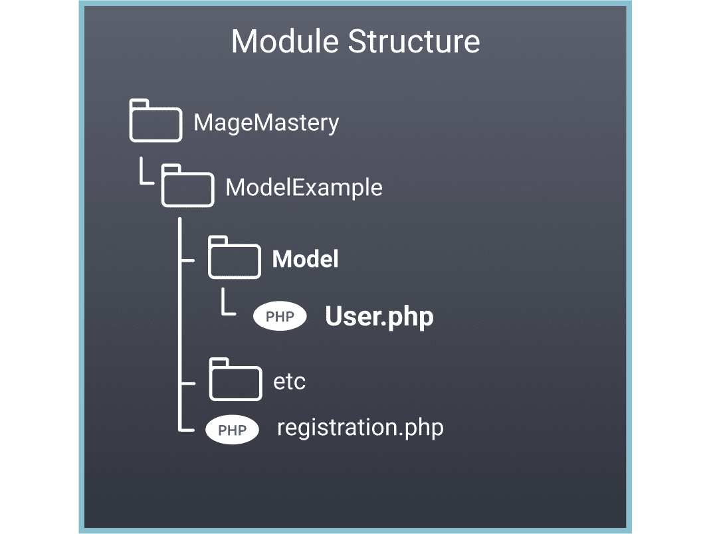
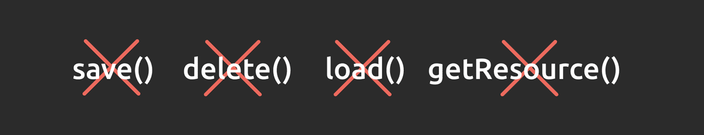

Model is one of the must have components for CRUD operations in Magento 2 framework. In this lesson, we are going to learn what is a model, what are the capabilities of the model and how to create a model and use it in your custom Magento 2 extension.
Модель является одним из обязательных компонентов для операций CRUD во фреймворке Magento 2. В этом уроке мы узнаем, что такое модель, каковы возможности модели и как создать модель и использовать ее в вашем собственном расширении Magento 2.
Lesson Overview
Обзор урока
In this lesson we are going to learn the following:
В этом уроке мы узнаем следующее:
What is a Model?
Что такое модель?
Model Capabilities
Возможности модели
How to create a Model and use it in a Magento 2?
Как создать модель и использовать ее в Magento 2?
What is a Model in Magento 2?
Что такое модель в Magento 2?
A Model is a class that represents an entity or a record from a database. The model also provides access to entity data that is used across the Magento 2 application. The model term comes from a Model-View-Controller design pattern and is an important component to understand in Magento 2.
Модель - это класс, представляющий сущность или запись из базы данных. Модель также обеспечивает доступ к данным сущностей, которые используются в приложении Magento 2. Термин модель происходит от шаблона проектирования модель-представление-контроллер и является важным компонентом для понимания в Magento 2.
In order to create a model, a PHP class should extend an AbstractModel class, that comes from a Magento 2 framework. The model class inherits methods and logic that the AbstractModel class provides.
Чтобы создать модель, класс PHP должен расширять класс AbstractModel, который происходит из фреймворка Magento 2. Класс модели наследует методы и логику, предоставляемые классом AbstractModel.
Let’s have a look at the PHP class called User. The user class extends an AbstractModel class and can be called a model.
Давайте посмотрим на класс PHP под названием User. Пользовательский класс расширяет класс AbstractModel и может называться моделью.
In order to use the newly created User Model, we have to create a new instance of a User. A User Factory class creates a User instance, the setData method allows setting the value of “Max” to the key first name. The user object stores this data, and it can be accessed with the help of the getData method.
Чтобы использовать только что созданную модель пользователя, мы должны создать новый экземпляр пользователя. Класс User Factory создает экземпляр User, метод setData позволяет установить значение «Max» для имени ключа. Пользовательский объект хранит эти данные, и к ним можно получить доступ с помощью метода getData.
class Controller
{// ...publicfunctionexecute(){$user=$this->userFactory->create();$user->setData(‘first_name’, ‘Max’);$firstName=$user->getData(‘first_name’);}}
As you noticed, we don’t use “new” operator in order to create a User object. This is because every model has a dependency that is injected into a construct method, and with the help of an Inversion of Control implemented in Magento 2, we can inject dependencies automatically.
Как вы заметили, мы не используем оператор new для создания объекта User. Это связано с тем, что каждая модель имеет зависимость, которая вводится в метод конструкции, и с помощью инверсии управления, реализованной в Magento 2, мы можем автоматически вводить зависимости.
For user objects to be created, we can use a UserFactory class that is automatically generated by Magento 2 framework at the time we've requested it in a construct method.
Для создания пользовательских объектов мы можем использовать класс UserFactory, который автоматически генерируется фреймворком Magento 2 в то время, когда мы запросили его в методе конструкции.
The User Factory class is also known as a Model Factory class with the single create method. The only responsibility of this auto-generated User Factory class is to create new instances of the User class.
Класс User Factory также известен как класс Model Factory с единственным методом создания. Единственная ответственность этого автоматически сгенерированного класса User Factory - создание новых экземпляров класса User.

Resource Model Relation
Связь с моделью ресурсов
A model usually represents a business entity that is stored in a database. For the model to properly work, the so-called Resource Model class relation has to be provided inside the _construct() method.
Модель обычно представляет собой бизнес-объект, который хранится в базе данных. Для правильной работы модели внутри метода _construct() должно быть предусмотрено так называемое отношение класса модели ресурсов.
Don’t be confused with the public __construct() method. As this is a protected method with the single underscore. Inside this method, the _init method should be called with the name of the resource model class. We are going to talk about Resource Models in the next Mage Mastery lesson.
Не путайте с общедоступным методом __construct(). Поскольку это защищенный метод с одним подчеркиванием. Внутри этого метода должен вызываться метод _init с именем класса модели ресурсов. Мы поговорим о моделях ресурсов на следующем уроке Мастерства магов.
Optional Model Interfaces
Дополнительные интерфейсы модели
A model can optionally implement interfaces for clarity and ease of use or to provide additional capabilities. The IdentityInterface interface can be added if the model needs to have a caching capability, let’s say, every time a model is saved or deleted, the cache for this model is cleared.
Модель может дополнительно реализовывать интерфейсы для ясности и простоты использования или для предоставления дополнительных возможностей. Интерфейс IdentityInterface можно добавить, если модель должна иметь возможность кэширования, скажем, каждый раз, когда модель сохраняется или удаляется, кэш для этой модели очищается.

Or, we can create a Data interface and provide public methods to be able to rely on interfaces rather than concrete implementations.
Или мы можем создать интерфейс данных и предоставить общедоступные методы, чтобы иметь возможность полагаться на интерфейсы, а не на конкретные реализации.
Model Class Location
Расположение класса модели
Models are usually located inside the Model directory of a Magento 2 extension.
Модели обычно находятся в каталоге Model расширения Magento 2.

Important
Важно
A model should be used when there is a need to retrieve data from a database and present it in the Magento 2 application. A model class represents a Domain Model of a Magento 2 extension.
Модель следует использовать, когда необходимо получить данные из базы данных и представить их в приложении Magento 2. Класс модели представляет доменную модель расширения Magento 2.
The AbstractModel class has deprecated CRUD and other methods. These methods shouldn’t be used.
Класс AbstractModel устарел CRUD и другие методы. Эти методы использовать нельзя.

Model is usually used in conjunction with a Resource Model class. This is the class that knows how to load and store data in a database. We will learn more about Resource Model in our next lesson.
Модель обычно используется вместе с классом модели ресурсов. Это класс, который знает, как загружать и хранить данные в базе данных. Мы узнаем больше о модели ресурсов в нашем следующем уроке.